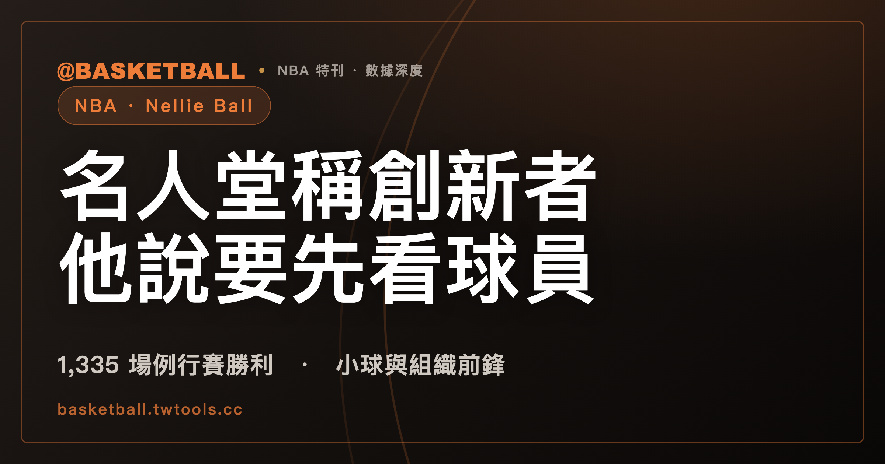

尼爾森的 Nellie Ball：小球、組織前鋒與 1,335 勝背後的選擇
尼爾森（Don Nelson）的 Nellie Ball 常與小球、快速進攻及組織前鋒連在一起。名人堂稱他為創新者，他本人則把這些做法形容為因應陣容的選擇；1,335 場例行賽勝利與從未帶隊進入總冠軍賽，是這段生涯並存的紀錄。

NBA｜尼爾森與 Nellie Ball
把進攻交給前鋒發動，讓 7 呎 6 吋的中鋒站到三分線外。這些安排出現在尼爾森（Don Nelson）的球隊裡，也逐漸成為人們談起 Nellie Ball 時會想到的畫面。
但問到當事人，他的回答帶著條件：如果球隊有好中鋒，就往內線打；好長人不夠，才用速度、較小的陣容與非常規位置尋找機會。尼爾森並不認為一個固定標籤，足以說明他如何帶每一支球隊。
2026 年 8 月 9 日，尼爾森辭世，享年 86 歲。他留下 1,335 場例行賽勝利，也留下了一個仍值得分開問的問題：他做過什麼，和後來的人如何替那些做法命名，是否完全相同？
名人堂稱創新者，尼爾森說要先看手上的球員
Naismith 籃球名人堂把尼爾森稱為小球進攻的創新者與重要推行者，也把 point forward 概念的引進記在他名下。Point forward 通常譯為組織前鋒，指由前鋒承擔發動進攻的工作。
尼爾森在 Marc Stein 的 2012 年訪談裡，說 Nellie Ball 大概指小球、快速而有觀賞性的進攻、組織前鋒，以及讓球員打非傳統位置。他隨即補充，自己不認為這個標籤完全準確。
他用公鹿時期的 Bob Lanier 當例子：有好中鋒時，他會等 Lanier 跑過半場，再把球送進內線。當球隊沒有這樣的人員，才需要想別的辦法，爭取原本不容易贏的比賽。
到了 2016 年在 The Players' Tribune 的自述，他又把快攻的源頭拉回球員時期。效力塞爾提克時，Red Auerbach 會安排大個子與小個子打全場練習，小個子常能靠速度贏球。尼爾森把快攻的功勞歸給 Red Auerbach。他在 2012 年訪談另補充，換成半場，就不是同一回事。
這幾種說法的差別在於觀察位置。名人堂回看一個人的影響；尼爾森自己回想的，則是當時有哪些球員、要解決什麼問題。
組織前鋒改的是工作，不只是位置名稱
在公鹿，Marques Johnson 與 Paul Pressey 都曾負責發動進攻。Pressey 身高 6 呎 5 吋，場均助攻從 3.1 次，上升到第三季的 6.8 次，再於 1985-86 球季達到生涯最高的 7.8 次。
前鋒仍是前鋒，但持球過半場、安排進攻的任務，不再完全交給傳統控球後衛。勇士時期的 Rod Higgins、Chris Mullin、Stephen Jackson，也曾出現在尼爾森的組織前鋒用法裡。
至於誰發明 point forward 這個詞，NBA.com 作者 Steve Aschburner 在悼念專文中保留了爭議，提到 Del Harris、Robert Reid、Marques Johnson 的相關主張。他能給尼爾森的較窄定位，是大量使用並推廣這個概念。
同一個 NBA.com 網站也有不同寫法：美聯社訃聞較直接把引進組織前鋒歸給尼爾森，例行賽教練勝場榜又使用了創造位置的說法。能確定他反覆這樣用人，不代表名稱的發明權也已沒有爭議。
Manute Bol 的 91 次三分出手，處理的是當時的對位
1988-89 球季，7 呎 6 吋的 Manute Bol 在勇士出手 91 記三分，命中 20 球。他的出手次數，比 Mitch Richmond 還多 1 次。
尼爾森談這個安排時，說到的是當時的非法防守規則、如何把對方長人帶離籃下，以及進攻時間將盡時的出手機會。他與 Cotton Fitzsimmons 曾參與相關規則制定，也會把 Bol 拉到高位做掩護。
把中鋒拉到外線，外觀與後來的籃球有相似處；不過，要理解這 91 次出手，還得看當時的規則與球員條件。不能只因為後來的球隊也投很多三分，就把兩者接成相同的進攻理論。
Run TMC 的速度，也伴隨人員選擇的代價
尼爾森在 1988-89 球季接手勇士，球隊從前一季的 20 勝 62 敗，進步到 43 勝 39 敗。他在勇士的第一段 7 個球季，球隊有 4 次進入季後賽。
Run TMC 的名字來自 Tim Hardaway、Mitch Richmond、Chris Mullin。加上 Šarūnas Marčiulionis 與 Rod Higgins，這 5 名球員都不超過 6 呎 7 吋；另有 6 呎 8 吋的 Tom Tolbert，在前場拉開空間。
球員可以持球、進攻不必完全照傳統位置分工，是這段勇士的辨識度。人事選擇卻沒有每一次都留下好結果。尼爾森交易 Richmond，拆散了 Run TMC，後來把這筆交易稱為自己最大的遺憾。
Chris Webber 的衝突則圍繞中鋒位置與執教方式。尼爾森希望他出任中鋒，Webber 在 1994 年 11 月被交易，尼爾森又在 3 個月後離開勇士。調整位置能帶來新的打法，也需要球員願意接受那份工作。
4 支球隊、5 段任期，合計執教 31 季
| 球隊 | 執教期間 | 季數 | 關鍵事件 |
|---|---|---|---|
| 密爾瓦基公鹿 | 1976-77 球季開打不久至 1986-87 | 11 | 7 連霸中央組冠軍；1983、1985 年度最佳教練；讓 Marques Johnson、Paul Pressey 承擔組織工作 |
| 金州勇士，第 1 段 | 1988-89 至 1994-95 球季中 | 7 | Manute Bol 投三分、Run TMC；1992 年度最佳教練；交易 Mitch Richmond 成為本人最大遺憾 |
| 紐約尼克 | 1995-96，未滿 1 季 | 1 | 執教 59 場，34 勝 25 敗後遭解僱 |
| 達拉斯獨行俠 | 1997-98 至 2004-05 | 8 | 引進 Dirk Nowitzki、Steve Nash；2002-03 球季打進西區決賽 |
| 金州勇士，第 2 段 | 2006-07 至 2009-10 | 4 | 2007 年 We Believe；2009-10 帶菜鳥柯瑞 1 季；2010 年登上當時例行賽勝場榜首 |
5 段任期合計 31 季。勇士第一段 7 季、第二段 4 季，合計 11 季；把其中一段或兩段全部計入，會得到不同數字。
公鹿時期，他拿過中央組冠軍 7 連霸，1983、1985 年兩度獲選年度最佳教練，另一次在 1992 年的勇士。1994 年，他帶美國隊取得 FIBA 世界錦標賽金牌。
公鹿的起點存在史料差異。NBA.com 與美聯社寫的是 1976-77 球季前 18 場後，Larry Costello 請辭；CBS Sports 稱 Costello 遭解僱，尼爾森本人 2016 年的回憶則指向不同球季。談他的任期時，可以保留球季範圍，不必把不同版本收成一個沒有分歧的交接故事。
1,335 勝排例行賽第 2，教練生涯卻沒有總冠軍賽
尼爾森的例行賽戰績是 1,335 勝、1,063 敗。2010 年，他以第 1,333 勝超越 Lenny Wilkens，當時登上例行賽勝場榜首；2022 年 3 月，Gregg Popovich 以第 1,336 勝超越他。
NBA.com 的 2025-26 球季結束後榜單，仍把尼爾森列在第 2，Popovich 為第 1。這裡使用的是例行賽勝場，不加季後賽。若只比較尼爾森與 Wilkens，加入季後賽後分別是 1,335＋75＝1,410，以及 1,332＋80＝1,412，兩人的先後就會不同；這項相加並不是聯盟另行發布的合併排行榜。
他的球隊有 18 次進入季後賽，累計 75 勝 91 敗，4 次打到分區決賽，卻從未進入 NBA 總冠軍賽。
球員時期則有另一份成績。尼爾森打了 14 季，其中 11 季在塞爾提克，隨隊拿下 5 冠；塞爾提克在 1978 年退休他的 19 號球衣。2012 年進入名人堂時，他入選的身分是教練。
2007 年的黑八，要帶著七戰四勝制的範圍讀
2006-07 勇士以 42 勝 40 敗、第 8 種子進入季後賽，首輪遇上 67 勝的獨行俠。系列賽打到第 6 戰，勇士在 2007 年 5 月 3 日以 111:86 贏球，4:2 淘汰尼爾森的前東家。
勇士成為首輪改採七戰四勝制後，第一支淘汰第 1 種子的第 8 種子。這項限定要留著，不能簡化成 NBA 歷史上第一次出現黑八。
Baron Davis 在系列賽場均得到 25 分，第 1 戰拿下 33 分、14 籃板、8 助攻。這輪勝利成為 We Believe 勇士的重要記憶；下一輪遭淘汰，也讓尼爾森始終未進總冠軍賽的紀錄留在原處。
後來的小球，可以比較，不必排成唯一傳承
Mike D'Antoni 的太陽從 2004-05 球季以速度與空間打出 Seven Seconds or Less；2017-18 火箭則以三分導向的策略取得 65 勝 17 敗。這些做法與尼爾森的球隊可以放在一起看，卻不宜只憑相似陣容，就推出單一的發展路線。
Sports Illustrated 作者 Chris Ballard 在 2019 年談尼爾森時，也指出 George Karl、Mike D'Antoni 等教練，全球化、分析學與個別球員都參與了比賽的演變。Steve Kerr 在尼爾森辭世後則強調，他不斷挑戰傳統、嘗試不同陣容，對現代打法留下影響。
尼爾森自己的選擇仍然很具體：有 Lanier 就往內線打，長人不足就尋找速度與錯位。讀 Nellie Ball，先看他當時拿到什麼陣容，再看他怎麼分配工作，比替整段籃球史找一位唯一發明者，更接近那些實際發生的調整。
聯盟架構可參考 NBA 指南，近一季的賽果在2025-26 賽季回顧，後續球員異動則見2026 休賽季總表。
常見問題
Nellie Ball 是什麼？
通常用來指尼爾森球隊的小球、快速進攻、組織前鋒與非傳統位置安排。他本人在 2012 年訪談裡說這個詞「大概」涵蓋這些做法，但也不認為標籤完全準確；他會依陣容決定打法，有好中鋒時也打內線。
尼爾森真的發明小球了嗎？
不能給一個無爭議的「是」。名人堂稱他為小球創新者與重要推行者，他本人把快攻的源頭歸給 Red Auerbach；至於 point forward 詞彙的起源，NBA.com 專文仍列出不同人物的主張。
尼爾森是 NBA 史上勝場第幾多的教練？
依 NBA.com 的 2025-26 球季結束後榜單，1,335 勝排例行賽第 2。若自行加入季後賽，他的 1,410 勝會落在 Lenny Wilkens 的 1,412 勝之後；這不是 NBA 公布的合併排行榜，不能只靠兩人的比較就定出完整歷史名次。
Point forward 是誰發明的？
名稱的發明權有爭議。NBA.com 作者 Steve Aschburner 提到 Del Harris、Robert Reid、Marques Johnson 的相關主張；尼爾森可以確認的角色，是大量使用與推廣，讓前鋒承擔組織進攻。
尼爾森執教過哪些 NBA 球隊？
密爾瓦基公鹿、金州勇士、紐約尼克與達拉斯獨行俠，共 4 支球隊。勇士有兩段任期，5 段任期合計 31 個球季。
尼爾森拿過 NBA 總冠軍嗎？
球員時期隨塞爾提克拿過 5 冠；總教練生涯則從未帶隊進入 NBA 總冠軍賽。他有 3 次年度最佳教練，2012 年以教練身分進入名人堂。
資料來源
- NBC Sports：2012 年尼爾森談 Auerbach 與小球：全場與半場練習的區別。
- 尼爾森 2025 年公開問答逐字稿：他回憶參與規則修訂的內容。
- Naismith 籃球名人堂：Don Nelson：生涯定位與入堂身分。
- Don Nelson：Nellie Ball，2016 年本人自述。
- NBC Sports：2012 年 Marc Stein 訪談轉引。
- NBA.com，Steve Aschburner：Don Nelson 追思專文；NBA.com，美聯社訃聞，2026 年 8 月。
- NBA.com：例行賽教練勝場榜，2026-05-24 更新，採 2025-26 球季結束後口徑。
- 勇士官方 2023-24 Media Guide：歷年教練與球隊戰績。
- Sports Illustrated，Chris Ballard：2019 年 Nellie Ball 專文。
- CBS Sports 尼爾森生涯回顧：文中所述 Costello 交接版本與其他來源不同。